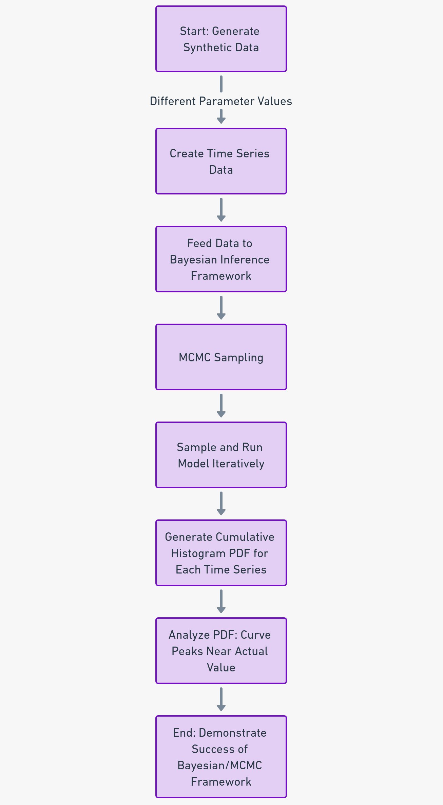

At USC, I spearheaded a project to develop a Bayesian inference framework for model parameter estimation from time series data. The challenge was to create a model that could accurately predict and analyze complex data patterns. By employing Bayesian methods, I was able to construct a framework that not only provided precise estimations but also accounted for uncertainties in the data.
